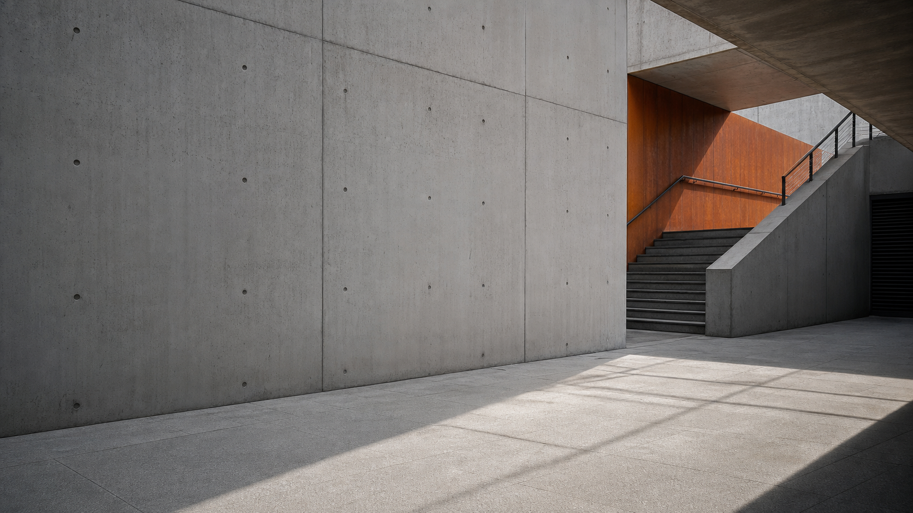
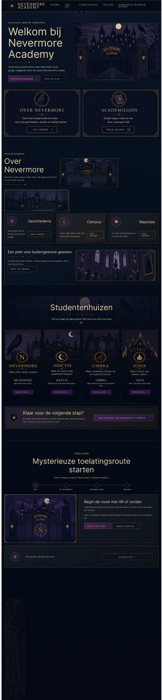

Mavo diploma
Mijn mavo-diploma vormt de basis van mijn verdere ontwikkeling en heeft mij geholpen om door te groeien naar het mbo.

Portfolio / HBO-ICT / Business IT
Rustig werken, duidelijk denken en stap voor stap bouwen aan digitale oplossingen die mensen en processen verder helpen.
Over mij
Mijn naam is Roshano, ik ben 25 jaar oud en naast mijn studie werk ik als chauffeur. Door mijn werk ben ik gewend om zelfstandig te werken, verantwoordelijkheid te nemen en goed te plannen. Die houding neem ik mee in mijn ontwikkeling binnen ICT.
Dit semester heb ik gewerkt aan projecten waarin ontwerp, techniek en gebruikerservaring samenkomen. Ik heb ervaring opgedaan met Visual Studio Code, GitHub, HTML, CSS, JavaScript, Figma, wireframes, prototypes en digitale tools die helpen om software beter te ontwerpen en te bouwen.
Opleiding & diploma's
Naast mijn huidige ontwikkeling binnen HBO-ICT neem ik ook ervaring mee uit eerdere opleidingen. Vooral mijn mbo-achtergrond in Social Work helpt mij om niet alleen technisch te kijken, maar ook naar mensen, communicatie en gedrag.
Mijn mavo-diploma vormt de basis van mijn verdere ontwikkeling en heeft mij geholpen om door te groeien naar het mbo.
Door Social Work heb ik geleerd om goed te communiceren, situaties te analyseren en rekening te houden met de behoeften van mensen.
In semester 2 ontwikkel ik mij verder in UX/UI, front-end, design thinking en Business IT.
Mijn aanpak
In mijn projecten gebruik ik steeds dezelfde basis: eerst begrijpen voor wie ik iets maak, daarna ontwerpen, testen en verbeteren. Daardoor maak ik keuzes niet alleen op gevoel, maar ook op basis van gebruikers, feedback en context.
Doelgroep, probleem, context, stakeholders en requirements duidelijk maken.
Persona's, user flows, wireframes en UI-keuzes vertalen naar een logisch concept.
Controleren of gebruikers begrijpen wat ze moeten doen en waar ze vastlopen.
Feedback verwerken, schermen aanpassen en keuzes beter onderbouwen.
Projecten
Deze projecten laten zien hoe ik onderzoek, ontwerp, feedback en technische uitwerking combineer.
Een interactieve website in dark-academia stijl waarin bezoekers de wereld van Nevermore ontdekken via studentenhuizen, een mysterieuze toelatingsroute en een AR-scan. Dit project is belangrijk voor mij, omdat ik hier feedback zichtbaar heb verwerkt tot een sterker concept met meer sfeer, verhaal en interactie.
Mijn eerste concept voelde nog te veel als een gewone schoolwebsite met een donkere stijl. Onderdelen zoals login, accountgegevens en betaling pasten minder goed bij het Nevermore-concept.
Ik heb het concept aangepast naar een ervaring met studentenhuizen, duidelijke navigatie, dark-academia sfeer, een AR-scan en een alternatief pad wanneer AR niet werkt.
Mobiele app voor het snel reserveren van vergaderruimtes binnen hybride organisaties. De oplossing richt zich op minder foutmeldingen, minder dubbele boekingen, betere ruimtebenutting en toegankelijk ontwerp.
Een korte escape room voor studiekiezers en eerstejaars HBO-ICT studenten. De nadruk lag op duidelijke puzzels, directe feedback en een speelervaring van 3 tot 5 minuten zonder lange uitleg.
Een interactieve UI-oplossing die nieuwe studenten en bezoekers helpt om gebouwen, lokalen en routes op de campus sneller te vinden. De interface is opgebouwd rond rust, overzicht en een taak per scherm.
Teamproject voor WeCatalyze / Low-code Academy. In de tussenrapportage is gewerkt aan planning, low-fidelity prototypes en het kiezen van een duidelijke richting voor de verdere uitwerking.
Uitgebreide case study
RoomFlow is een mobiele oplossing voor medewerkers in hybride organisaties die snel en duidelijk vergaderruimtes willen reserveren. Dit project past bij mijn toekomst richting Business IT, omdat het niet alleen gaat om schermen ontwerpen, maar ook om bedrijfsprocessen, gebruikersbehoeften en meetbare verbetering.
Medewerkers ervaren frustratie door onduidelijke beschikbaarheid, foutmeldingen en dubbele boekingen.
Ik werkte met doelstellingen, doelgroepanalyse, stakeholdermap, persona's, customer journey, empathy map en MoSCoW-eisen.
In het prototype zijn onder andere de hoofdknoppen versterkt, de boekingen duidelijker gemaakt en een kaartweergave toegevoegd op basis van feedback.
De oplossing richt zich op minder tijdverlies, betere ruimtebenutting, toegankelijkheid en een boekingsflow die snel te begrijpen is.
Proces in beeld

Bewijsstukken
In mijn documenten is te zien hoe ik van onderzoek naar ontwerp en verbetering ben gegaan. Deze onderdelen ondersteunen de projecten in mijn portfolio.
Onderzoek, doelgroep, probleemdefinitie, ideevorming, prototype en testfase.
Probleem, doelstellingen, impact, doelgroep, stakeholders en requirements.
Feedbackverwerking, vernieuwde user flow, AR-route en Nevermore-concept.
Campus Navigation Companion met design thinking, UI patterns en iteraties.
Vaardigheden
Wireframes, user flows, persona's, moodboards, visuele hiërarchie en UI patterns.
HTML, CSS, JavaScript, Visual Studio Code, GitHub en gestructureerd werken aan code.
Doelgroepanalyse, stakeholderanalyse, customer journeys, interviews en observaties.
Testen, feedback verwerken, itereren en controleren of een oplossing logisch werkt.
Design Thinking, MoSCoW, customer journey, empathy map en gebruikerstesten.
Plannen, samenwerken, communiceren, verantwoordelijkheid nemen en reflecteren.
Ontwikkeling
In het begin vond ik AR en sommige technische onderdelen lastig. Door te oefenen, fouten te maken en opnieuw te proberen, heb ik geleerd rustiger naar problemen te kijken.
Ik heb geleerd om opdrachten op te delen in kleinere stappen, mijn code overzichtelijker te houden en eerst te begrijpen waarom iets werkt.
Bij Nevermore heb ik feedback verwerkt door het concept te veranderen van een algemene schoolwebsite naar een interactieve ervaring met verhaal en AR.
Ik wil verder groeien in het analyseren van bedrijfsprocessen en het bedenken van ICT-oplossingen die praktisch waarde toevoegen voor gebruikers en organisaties.
Contact
Ik blijf mij ontwikkelen als ICT-professional die techniek en business met elkaar verbindt. Dit portfolio laat mijn groei, mijn manier van werken en mijn motivatie zien. Voor vragen over mijn portfolio of projecten ben ik bereikbaar via mijn schoolmail.
Schoolmail Roshano.Wouter@windesheim.nl